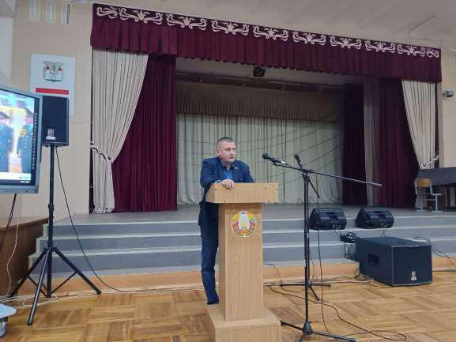
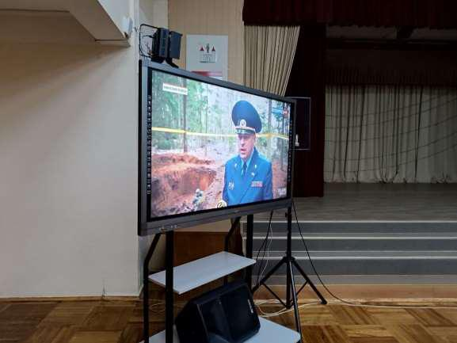
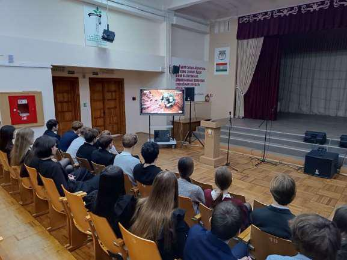
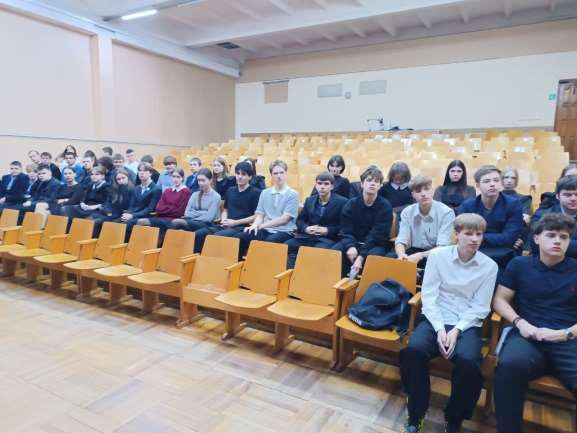

НЕВИННЫЕ ЖЕРТВЫ ВОЙНЫ
Урок памяти «Невинные жертвы войны» с учащимися 11-х классов прошел 16 октября под руководством руководителя по военно-патриотическому воспитанию Юрия Евсеенко.

Великая Отечественная война оставила белорусскому народу – тяжелое наследие-память о страшных трагедиях людей, ставших свидетелями и жертвами чудовищных преступлений фашизма. Эта боль навсегда останется в наших сердцах как память о жестоких преступлениях против человечности. Слишком дорогой ценой досталась свобода родной земли нашему народу. Не обошла война стороной и детей того поколения.

Основной темой урока стала история о детском донорском концлагере «Красный Берег».
В 1943 году нацисты создали на территории учебного хозяйства в деревне Красный Берег концлагерь для детей-доноров в возрасте от 8 до 14 лет. Некоторых из них насильственно отправляли в Германию, а других распределяли по госпиталям в качестве доноров для раненых немецких солдат и офицеров. Мемориальный комплекс, расположенный на месте концлагеря в деревне Красный Берег, является памятным и тронутым событиями местом, которое иногда называют «детской Хатынью».

В ходе урока ребята с замиранием сердца смотрели документальные кадры, рассказывающие о зверствах, творившихся в этом страшном месте. Особое впечатление произвели свидетельства выживших узников, их воспоминания о голоде, холоде и постоянном страхе.

Юрий Владимирович также рассказал ребятам о ходе расследования Генеральной прокуратурой Республики Беларусь уголовного дела по факту совершения геноцида белорусского народа и отметил, что эти преступления не имеют срока давности.